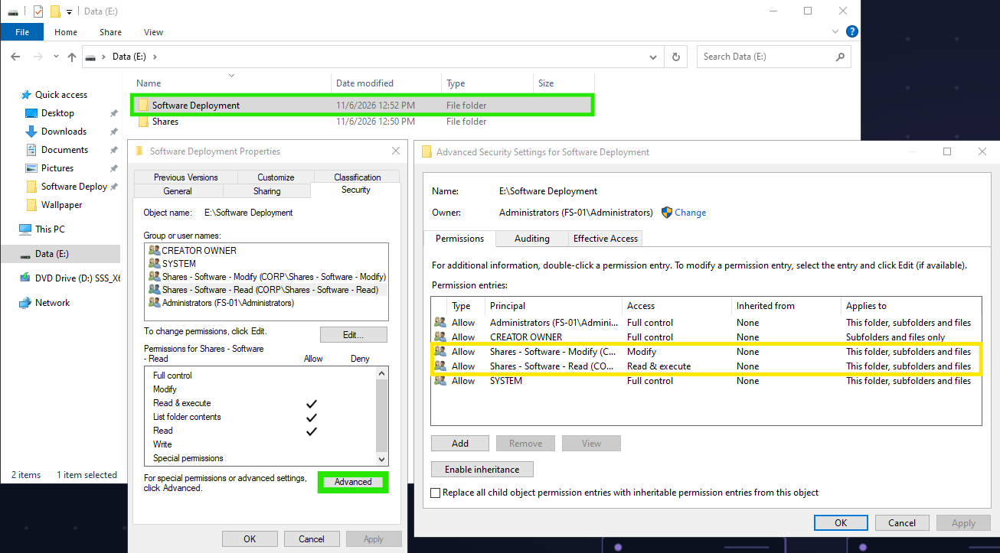
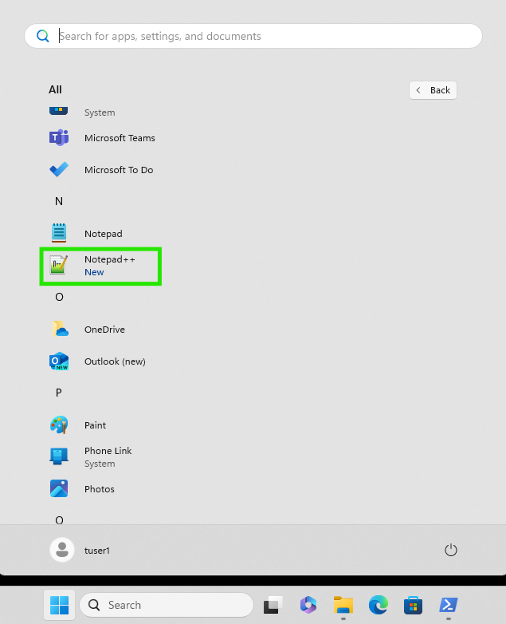
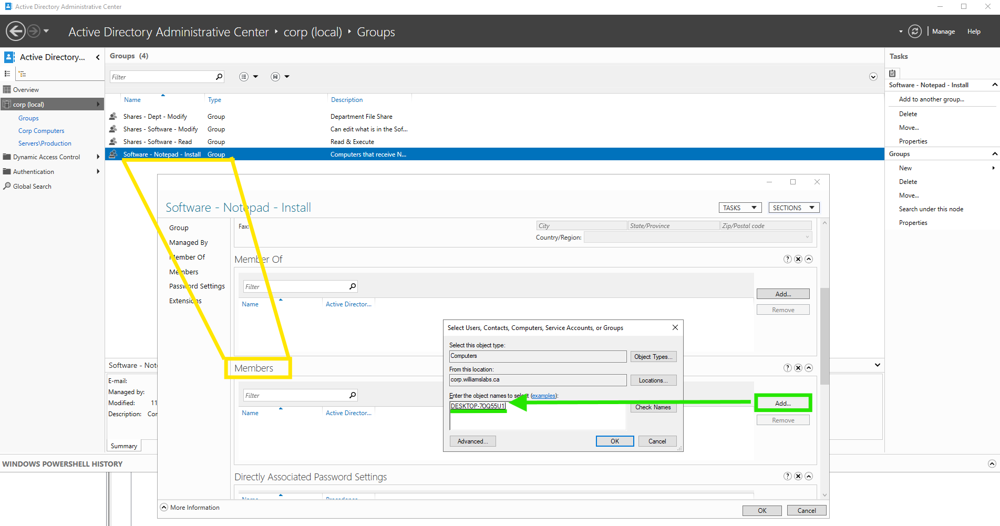
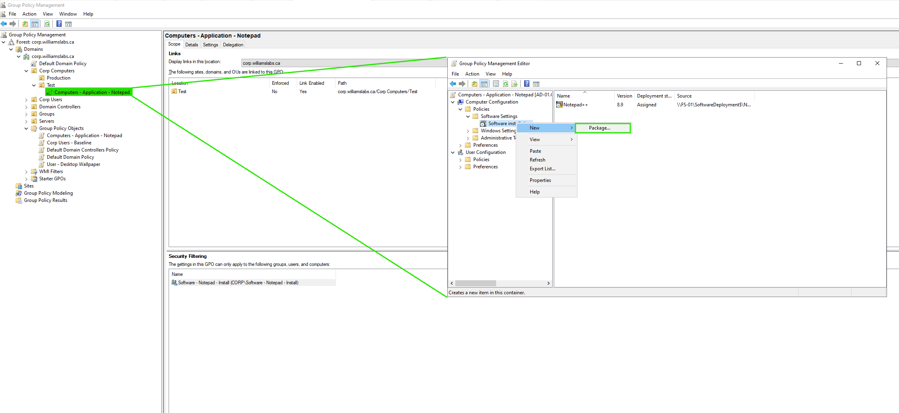
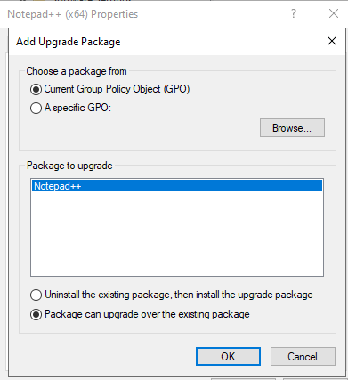
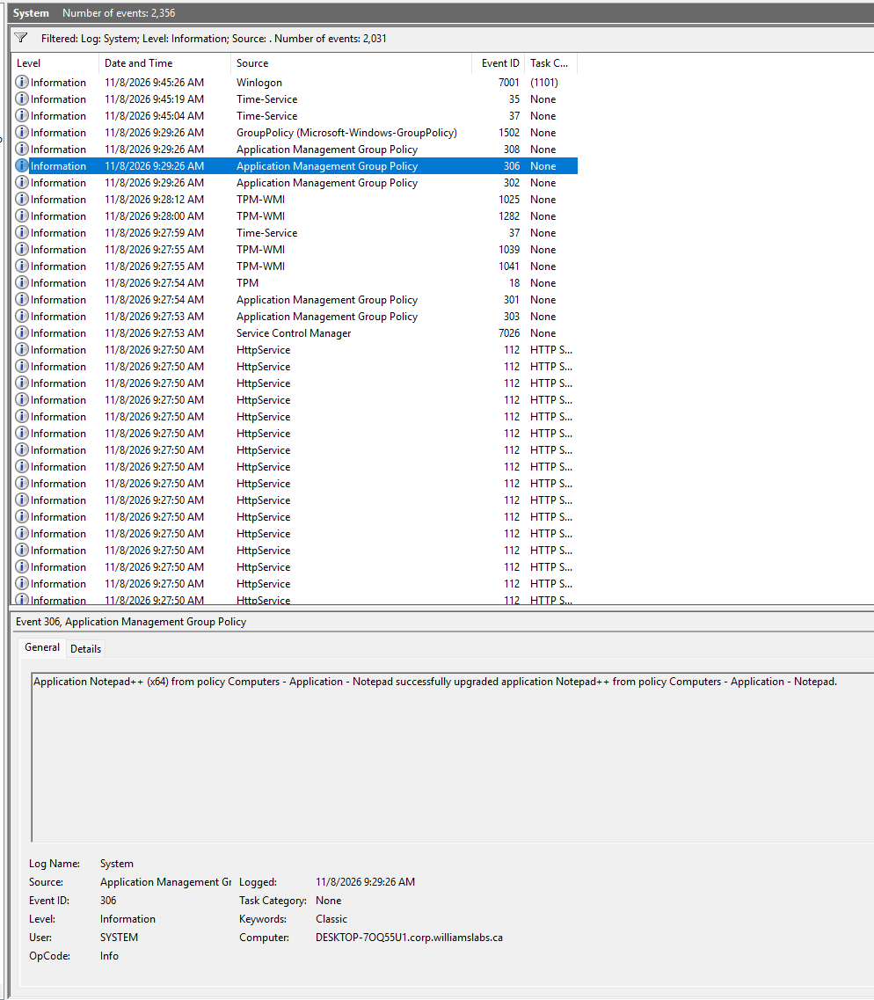
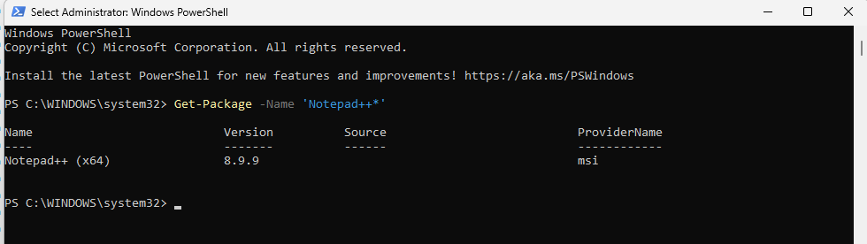

A runbook for deploying MSI applications to domain-joined Windows machines in corp.williamslabs.ca with Group Policy, from a central file share, with a pilot stage, upgrades and a rollback path. Notepad++ is the example app.
The goal is to deploy .msi apps to domain-joined Windows machines using Group Policy, from a central file share, with a test stage and a rollback path. GPO Software Installation offers three ways to deliver a package, and one is picked per app:
| Method | Where configured | When it installs | Best for |
|---|---|---|---|
| Assigned to computer | Computer Configuration | At restart, before logon | Standard apps for every machine (Notepad++, web browser) |
| Assigned to user | User Configuration | At logon (installs on first launch) | Per-user apps |
| Published to user | User Configuration | User installs from Get Programs | Optional apps |
This lab uses Assigned to computer, so Notepad++ installs on the test client at restart without any user action. Software Installation handles MSI packages only, and its settings cannot be created with the GroupPolicy PowerShell cmdlets, so the package is added in the GPMC console on AD-01.
Known limitations to plan around:
.mst), which this guide does not use.Every item is confirmed before starting. Values below are from the lab.
| Item | Value / requirement | Check |
|---|---|---|
| Domain | corp.williamslabs.ca (NetBIOS CORP) | Get-ADDomain |
| Domain controller | AD-01, 10.10.20.50 (server VLAN 10.10.20.0/24) | dcdiag /q |
| File server | Domain-joined Windows Server 2022 (FS-01) | Test-NetConnection FS-01 -Port 445 |
| Test client | Windows 11 in VLAN 10 (10.10.10.0/24), user tuser1, computer account in a test OU | nltest /dsgetdc:corp.williamslabs.ca |
| DNS | AD-integrated DNS on the domain controller AD-01 (10.10.20.50) | nslookup corp.williamslabs.ca |
| Routing / firewall | VLAN 10 can reach the file server on TCP 445 and the DC on the usual AD ports | Test-NetConnection from the client |
| Admin rights | Member of Domain Admins (or delegated GPO Creator Owners plus OU link rights) | GPMC |
| Tools | GPMC and RSAT Active Directory modules on AD-01 | Get-WindowsFeature GPMC |
Existing OUs: Corp Computers, Corp Users, Domain Controllers, Groups, Servers. A child OU under Corp Computers holds pilot machines (Corp Computers\Test), so a bad package never reaches the whole fleet. GPOs and groups are named broad to specific, separated by -.
Computers install the package at boot using their computer account, so the share must grant read access to Domain Computers, not just to users.
E:\Software Deployment (on the Data volume, not the system drive).E:\Software Deployment\Notepad++\8.9.4\npp.8.9.4.Installer.x64.msi. A deployed file is never overwritten in place; a new version gets a new folder.Shares - Software - Read (members: Domain Computers) and Shares - Software - Modify (members: Administrators).E:\Software Deployment (disable inheritance, remove Users):
SYSTEM and Administrators: Full controlShares - Software - Modify: ModifyShares - Software - Read: Read & execute
$path = 'E:\Software Deployment' New-SmbShare -Name 'SoftwareDeployment$' -Path $path -FullAccess 'CORP\Domain Admins' -ReadAccess 'CORP\Domain Computers','NT AUTHORITY\Authenticated Users'
What the share step does, and why it is needed:
New-SmbShare publishes E:\Software Deployment on the network as SoftwareDeployment$, so clients reach it at \\FS-01\SoftwareDeployment$. The $ keeps it out of network browse lists.-FullAccess gives Domain Admins Full control on the share; -ReadAccess gives Domain Computers and Authenticated Users Read.New-Item -ItemType Directory -Force C:\Temp | Out-Null $action = New-ScheduledTaskAction -Execute 'cmd.exe' -Argument '/c dir "\\FS-01\SoftwareDeployment$\Notepad++\8.9.4" > C:\Temp\share-test.txt 2>&1' Register-ScheduledTask -TaskName 'ShareTest' -Action $action -User 'SYSTEM' -RunLevel Highest -Force | Out-Null Start-ScheduledTask -TaskName 'ShareTest' Start-Sleep 5 Get-Content C:\Temp\share-test.txt Unregister-ScheduledTask -TaskName 'ShareTest' -Confirm:$false
A pass shows the test client's computer account can reach the share and list the folder, through both the share and NTFS permissions.
Get-FileHash .\npp.8.9.4.Installer.x64.msi -Algorithm SHA256
E:\Software Deployment\Notepad++\8.9.4\.msiexec /i "\\FS-01\SoftwareDeployment$\Notepad++\8.9.4\npp.8.9.4.Installer.x64.msi" /qn /l*v C:\Temp\npp-install.log

msiexec /x "\\FS-01\SoftwareDeployment$\Notepad++\8.9.4\npp.8.9.4.Installer.x64.msi" /qn.Two things control where an app installs:
Software - Notepad - Install ignores the GPO.A computer installs the app only when it is in a linked OU and in the group. Each app gets its own group and its own GPO.
Software - Notepad - Install (scope: Global, type: Security). Members are computer accounts.
| Object | Name / location | Purpose |
|---|---|---|
| Test OU | Corp Computers\Test | Test machines; GPO linked here first |
| Production OU | Corp Computers | GPO linked here after the test client passes |
| Server OU | Servers | App GPOs not linked here unless the app is meant for servers |
| Security group | Software - Notepad - Install | Security filtering target |
| GPO | Computers - Application - Notepad | Holds the software installation package |
One GPO per application keeps rollback simple: one GPO can be unlinked or disabled without affecting others.
gpmc.msc.Computers - Application - Notepad, leave Source Starter GPO as (none), and click OK. This creates the GPO and links it to the Test OU in one step.The same can be done with PowerShell on AD-01, in an elevated session:
New-GPO -Name 'Computers - Application - Notepad' -Comment 'Assigns Notepad++ 8.9.4 MSI. CHG-0001' New-GPLink -Name 'Computers - Application - Notepad' -Target 'OU=Test,OU=Corp Computers,DC=corp,DC=williamslabs,DC=ca'
Computers - Application - Notepad > Scope tab > Security Filtering. Remove Authenticated Users, then add Software - Notepad - Install.\\FS-01\SoftwareDeployment$\Notepad++\8.9.4\npp.8.9.4.Installer.x64.msi).
Software Installation runs only at startup for computer assignments, so a reboot is required.
gpupdate /force, then restart.| Check | Command / location | Expected |
|---|---|---|
| GPO applied | gpresult /r /scope computer or rsop.msc | GPO listed under Applied Group Policy Objects |
| Full report | gpresult /h C:\Temp\gp.html /f | Software Installation extension shows success |
| App installed | Get-Package -Name 'Notepad++*' or the Apps list | Correct version |
| Install events | Event Viewer > Windows Logs > System, source Application Management; MSI detail in the Application log, source MsiInstaller | Success events, no errors |
| GP processing | Applications and Services Logs > Microsoft > Windows > GroupPolicy > Operational | No Software Installation CSE errors |
Tip: enabling Computer Configuration > Administrative Templates > System > Display highly detailed status messages on the test OU makes the client show "Installing managed software" at startup, so the install is visible as it happens.
\\FS-01\SoftwareDeployment$\Notepad++\8.9.9\npp.8.9.9.Installer.x64.msi
gpresult /r /scope computer lists the GPO, Get-Package -Name 'Notepad++*' shows the new version, and the System log shows success events with no errors.

Redeploy: to reinstall a package on every machine that already has it, right-click it > All Tasks > Redeploy application.
Packages are not edited in place. Deleting and re-adding a package can trigger reinstalls or conflicts, so a new package is added and supersedes the old one through the Upgrades tab.
Rollback, fastest first:
Get-Package -Name 'Notepad++*'.Backup-GPO -Name 'Computers - Application - Notepad' -Path D:\GPOBackups, and restore with Restore-GPO if the GPO is damaged. E:\Software Deployment is included in the disaster recovery backup plan.One per deployment:
| Field | Entry |
|---|---|
| Change ID / date | |
| Application, version, vendor URL | |
| SHA-256 verified | Yes / No |
| Package path (UNC) | |
| GPO name and linked OU | |
| Filtering group | |
| Pilot computers and result | |
| Production rollout date | |
| Rollback tested | Yes / No |
Checked against these pages on 2026-11-06 and 2026-11-07: